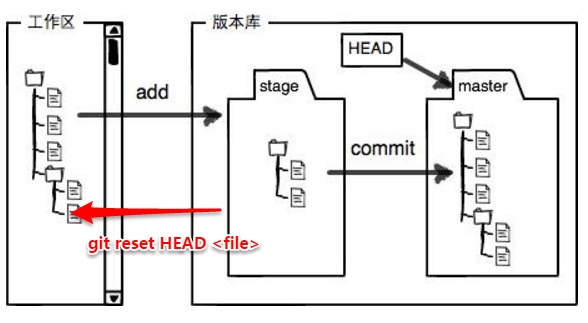

工作区：（Working Directory）就相当于是工作开发的目录
版本库：（Repository）工作区的一个隐藏目录.git，是Git的版本库。
版本库是Git托管项目的核心，存了很多东西，最重要的是暂存区stage(index)，还有Git为我们自动创建的第一分支master，以及指向master的一个指针叫HEAD
原理图：

- 开发中文件的修改都发生在工作区
- git diff是查看工作区的修改情况
- 当暂存区为空时（此文件没有添加到暂存区），是工作区与当前版本号的对比
- 当暂存区不为空时（此文件已经存在于暂存区），是工作区与暂存区的对比
- 用git checkout告诉Git，丢弃工作区的修改
- 暂存区没有文件时，撤销修改回到和版本库的状态一样
- 暂存区有此文件时，撤销工作区修改回到和暂存区的状态一样
- 通过git add把需要提交的文件添加到暂存区中（可用git reset HEAD <file>从暂存区删除要提交的修改，但工作区修改不会删除），
- git status是查看暂存区stage的状态
- 为空时
- 工作区在当前版本上无修改时：
- 为空时

- 工作区在当前版本上有修改时：

- 不为空时
- 工作区的修改全部都已git add添加到暂存区时：
- 不为空时

- 工作区有修改没git add添加到暂存区时：

git status是会查看暂存区的状态，全部的修改都会检测到，
- 工作区的修改有无添加到暂存区
- 暂存区有无可commit的修改
- 通过git commit一次性把暂存区的所有内容提交到当前分支，仓库版本号commit id更新
- 每次git commit都是一次性提交同时清空掉暂存区stage
- git commit之后只是更新了本地仓库，并没有改变远程服务器的仓库
- 只有git pull上传到远程服务器上，才会更新远程服务器的仓库版本
Git特点：
Git管理的不是文件，而是修改，当你在工作区所做的修改先git add添加到暂存区后在git commit提交时修改才会生效，如果只是修改没有git add先添加到暂存区，git commit是不会提交你做的修改的，所以Git管理的是添加到暂存区里的修改。
Git是分布式版本控制系统，同一个Git仓库，可以分布在不同机器上，且每台机器的版本库都是一样的，无主次之分。
（github就是提供远程Git仓库托管服务的网站）
本地仓库与远程Github传输设置:（SSH key设置）
本地Git仓库和Github仓库之间的传输是通过SSH加密的，所以本地Git仓库需要创建传输的SSH的Key，然后把这Key也告诉给远程github仓库，两者就可以进行正常的传输了。
- 本地用户主目录下.ssh目录里确保有id_rsa和id_rsa.pub这两个文件
- 没有的话按下面操作
- 开始里搜索Git Bash运行。
- 执行ssh-keygen -t rsa -C "github账号的邮箱地址"

- 没有的话按下面操作
- github上settings里设置SSH key
- Title随意取，把id_rsa.pub的文字复制贴在Key框里，添加

只有设置了SSH Key，github才能识别出是你推送的提交，而不是别人篡改的，github上也可以设置多个SSH Key，相当于授权给多个可以推送提交的终端。
Git支持多种协议
克隆远程Git仓库地址的时候，可以看到GitHub给出的地址不止一个，除以下的两种协议以外，Git还支持多种协议。